back
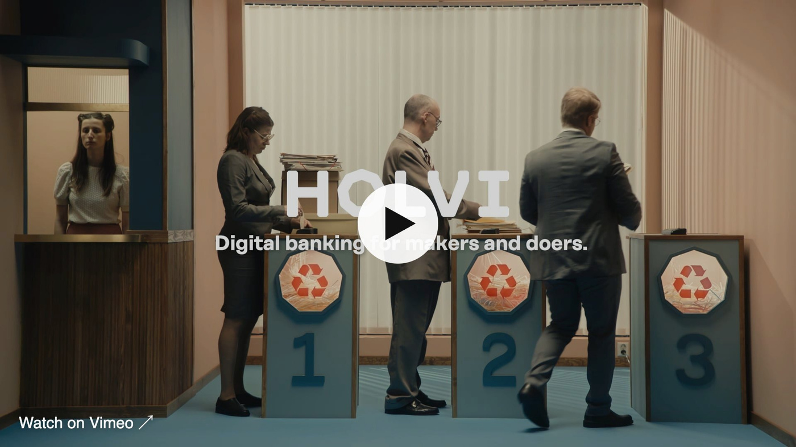
Holvi: Marketing & Brand Strategy, Events and Trade Fairs for a Fintech in the DACH Market
Marketing & Brand Lead, Holvi · Berlin · Marketing & Brand Strategy DACH · Creative & Event Production · Trade FairsHolvi is a business account built from Helsinki for freelancers, creatives and small businesses. For three years I led marketing and brand for Germany, Austria and Switzerland from Berlin – positioning Holvi in the DACH market, producing integrated campaigns and bringing the brand to life at events and trade fairs. The goal: make Holvi the natural choice for the self-employed – the makers and doers.
Marketing & Brand Strategy for the DACH Markets
Bringing a Finnish fintech to the German-speaking market meant translating a Nordic brand for a very different audience. I developed the marketing strategy for DACH and a storytelling approach that stayed true to Holvi’s values while speaking the language of local freelancers and founders – consistent across digital, out-of-home, print, social and live experiences. Together with the international team in Berlin and Helsinki, I aligned creative concepts, content and media into one campaign ecosystem.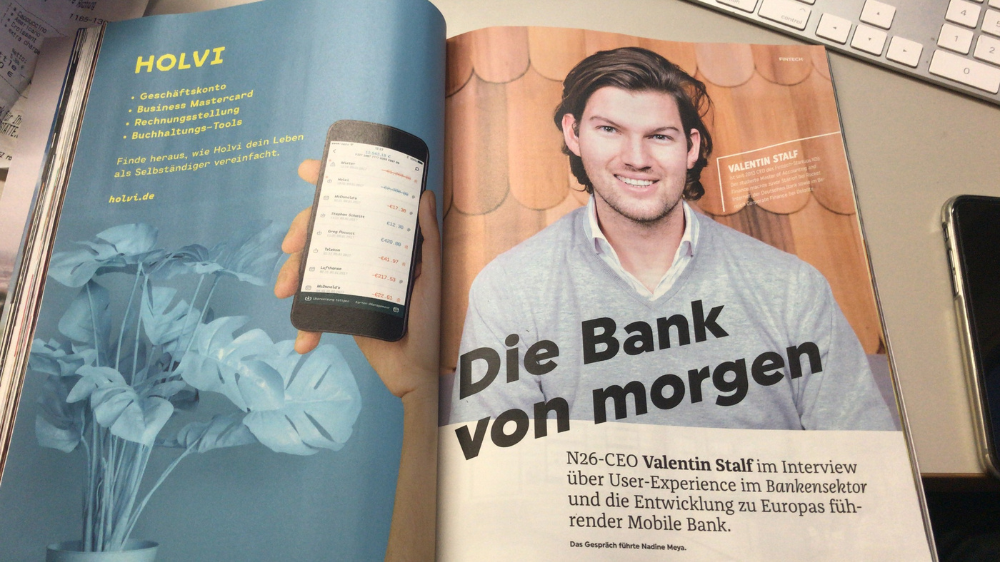
Campaign: Banking for Makers & Doers
The campaign put the self-employed centre stage. I led the creative concept and production – from key visuals and photo shoots to film, out-of-home and social – and extended it into branded merchandise worn by the community.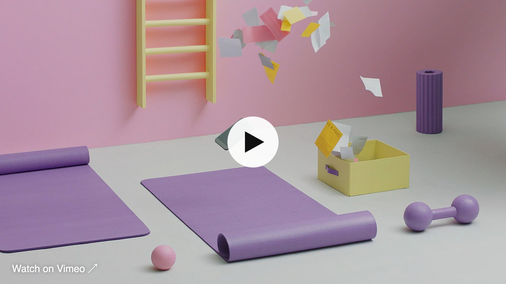
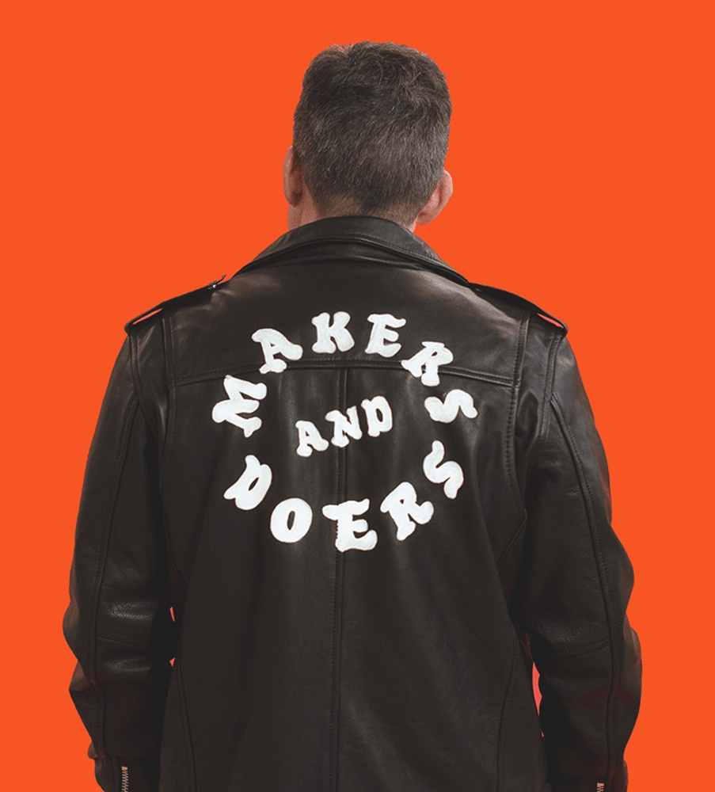
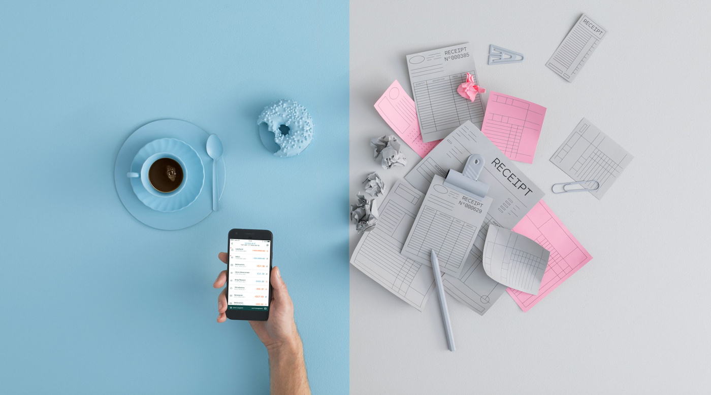
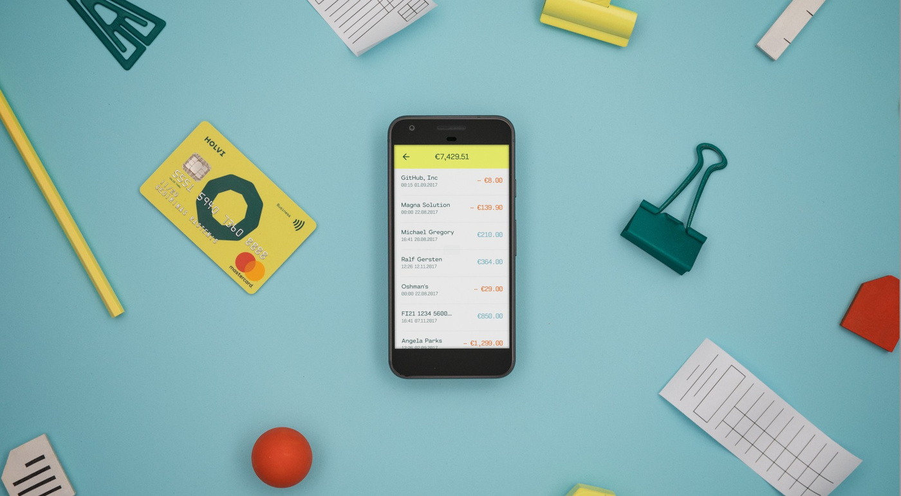
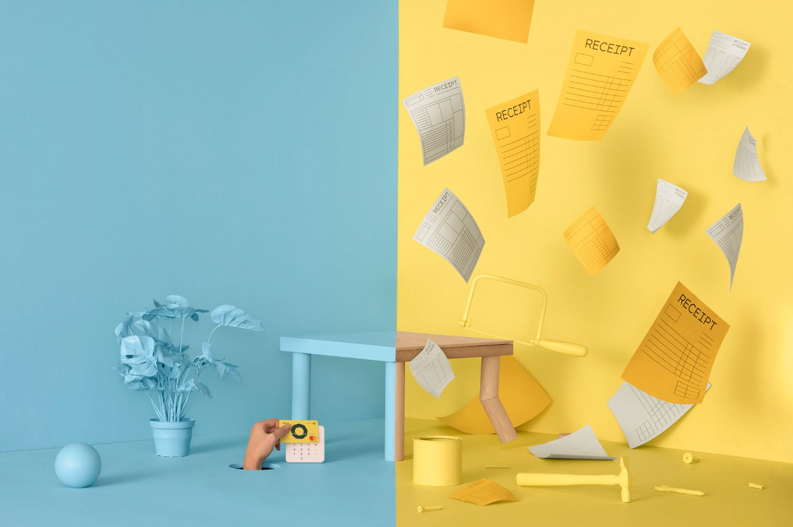
Out-of-Home Campaign
To reach freelancers where they live and work, the campaign moved onto the streets with billboards and posters – with headlines like “No more bureaucracy. No more paperwork.” and “New tricks for old dogs and young ones too”.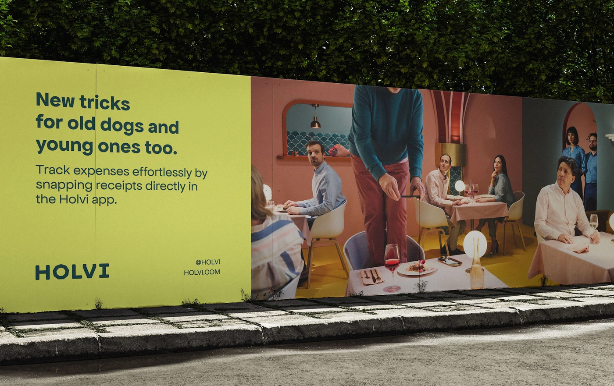
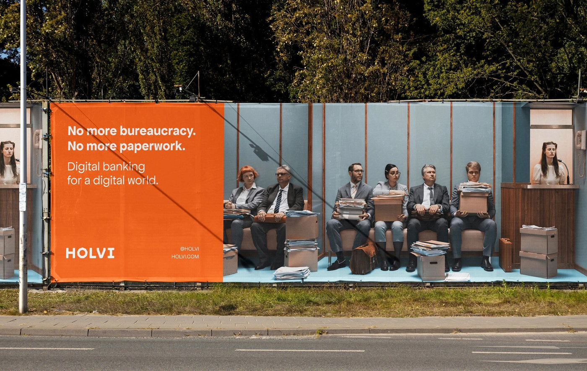
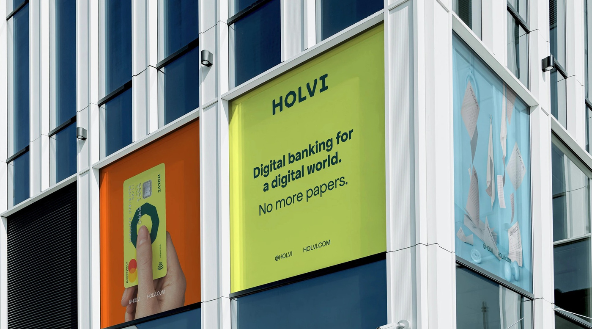
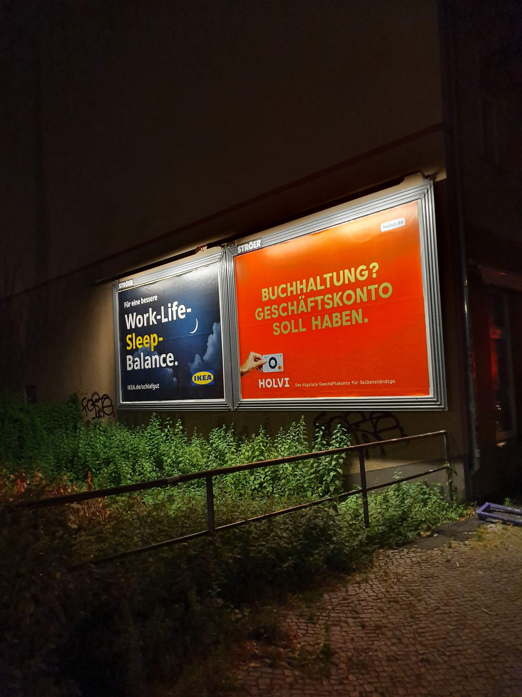
Event Production & Trade Fairs
Live experiences were key to building trust in a young financial brand. I conceived and produced Holvi’s trade fair presence and events – from booth concept and branding to on-site communication – and coordinated event and content production in Berlin, Helsinki and Stockholm. Formats like “Future of Finance” opened conversations about the future of banking for the self-employed.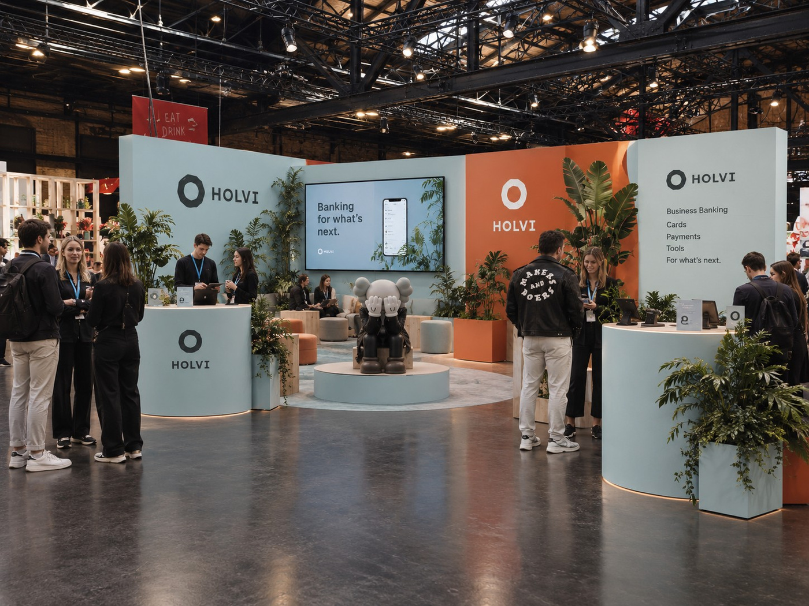
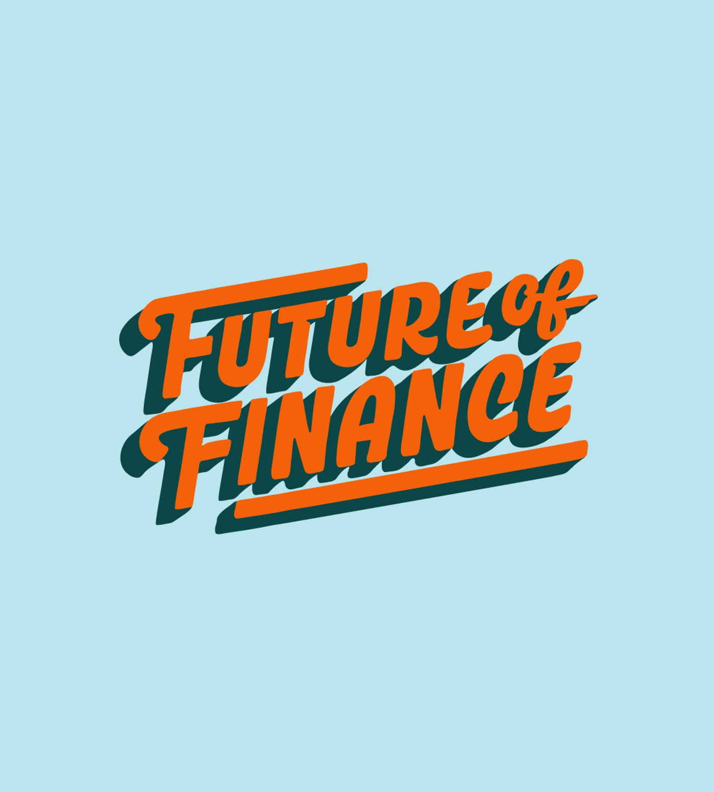
PR & Thought Leadership
Marketing, PR and data went hand in hand. Holvi surveys fed media stories – for example on predictive banking, which 85 % of respondents had never heard of – and Holvi was covered by outlets such as Business Insider, Gründerszene and IT-Finanzmagazin.
My Responsibilities
— Marketing and brand strategy for Germany, Austria and Switzerland— Creative concepts, storytelling and campaign production – film, out-of-home, print and social
— Event production and trade fair presence, including booth concept and branding
— Coordination of events and content production in Berlin, Helsinki and Stockholm
— Leading interdisciplinary teams of designers, writers and digital marketers
— PR support and survey-based thought leadership
Today I bring this experience to event management and concept & strategy at Table Studio, my community & experience studio in Berlin.
Next case: Volkswagen × Hermes →